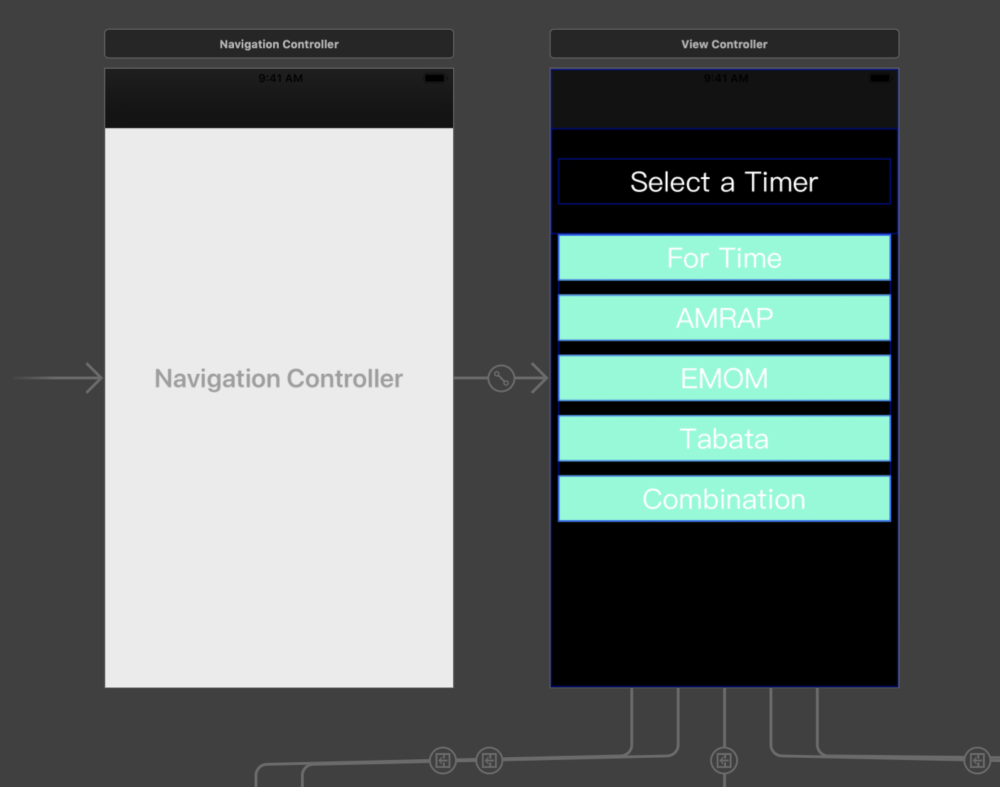
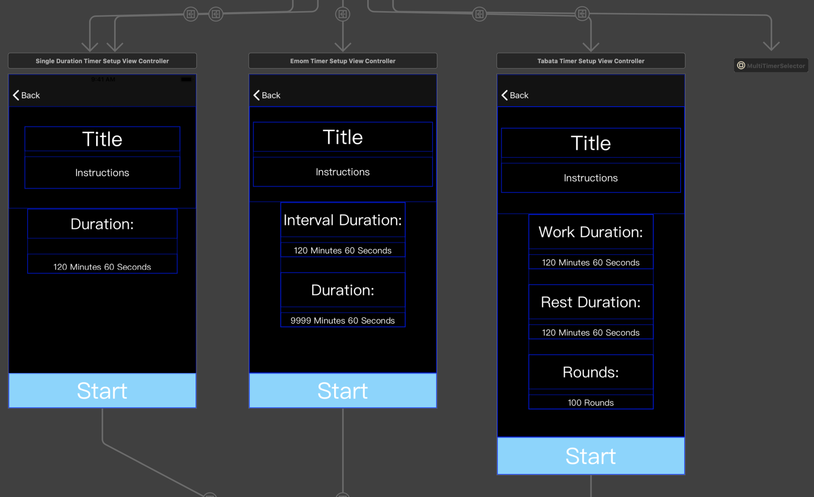
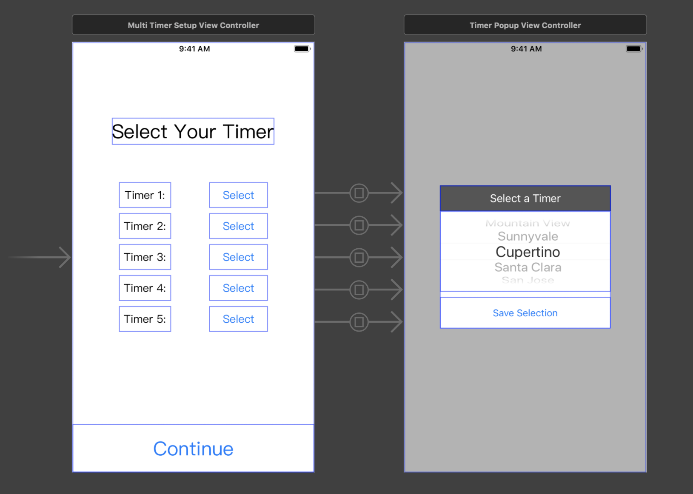
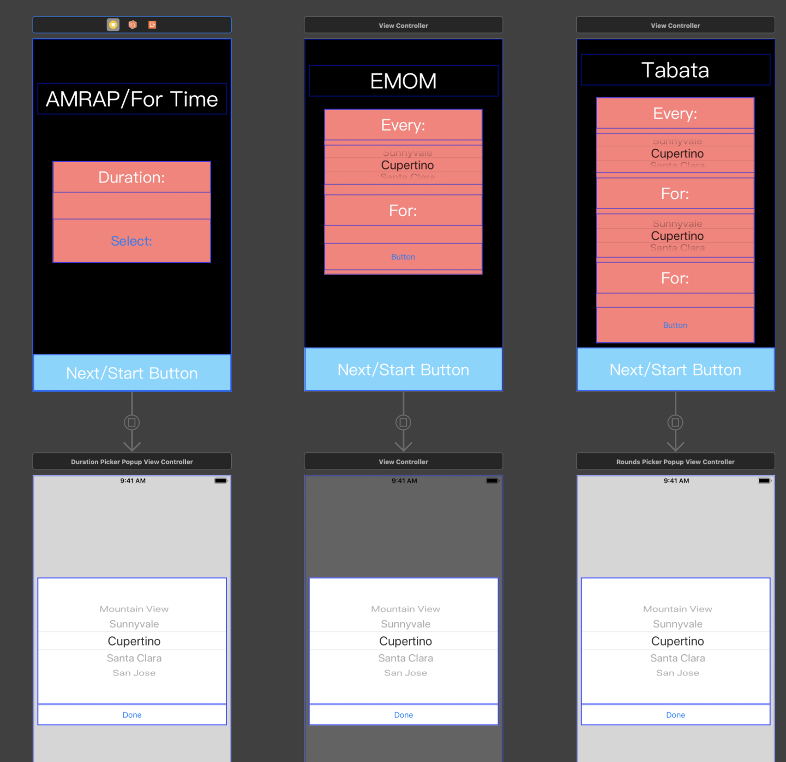
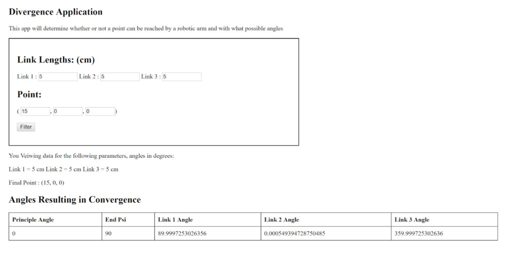
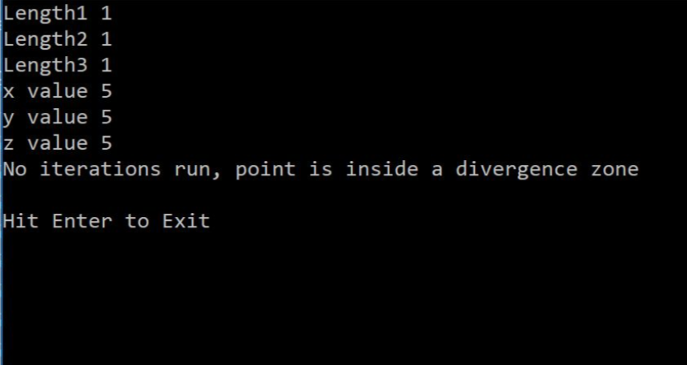

I'm a 3rd-year Mechatronics Engineering student at the University of Waterloo looking for internship
opportunities in the software industry. I am a self-starter and very goal oriented. I hope to learn
as much as I can during my final work term from the company and the software team I work with. I am
passionate about all the work I do and am looking to make an impact in any industry I work in!
Apart from spending my free time working on side projects and learning new programming languages, I can
be found at the CrossFit gym I go to, outdoors playing sports and going to the beach or watching hockey,
basketball, and baseball. All of which I love to do with friends and family. I try my best at everything I
do which gives me new goals I can strive towards daily. I love listening to any music I can work out to
and anything Country. I also enjoy reading books, my mind is open to anything that I might find interesting
whether it be fiction or non-fiction!
Work Term Reports
Analysis of a Database Migration on a Production Level Database
In this report, I analyzed my work regarding updates to FleetCarma's database. My changes allowed for
vehicle trims to be stored along with other vehicle information. This work provided the information
needed to make specific vehicle data more precise (including battery state of health data).
Designing FleetCarma’s Portal Cache Improvements
In this report, I analyzed my improvements for FleetCarma's data pipeline. The report analyzes the
steps I made and proof of concepts I created that aimed to remove the need for a separate analytics
workload that acted as a cache. This NoSQL storage was created to provide users with high-cost data.
The results of my investigation and changes allowed OLTP and analytics workloads to use the same
database resulting in the use of real-time operational analytics.
Designing Requirements for Motorq Geofencing
In this report, I designed product requirements for a geofencing implementation to be used by Motorq.
This required research into geofences, how they work, pre-existing implementations and customer
requirements. Additionally, potential implementations were provided.
Product Management Intern
May 2019 - Aug 2018
Motorq
My final co-op term at Motorq was my first official experience in a product management position.
During this term I worked closely with the CEO and COO to determine goals, prioritize work,
analyze research findings and finalize requirements for specific phase implementations. Additionally,
I communicated with customers through a variety of means to understand existing concerns, desired
products and potential use cases.
I advanced product efforts through the creation of many product requirement documents and worked
closely with the remote engineering team to implement and roll out new features and products. Once
implementations were done, I wrote tests through a variety of means (python/excel/C#) to ensure
exceptional data quality was being provided to the customer.
During the term, I made efforts to improve existing data quality through the analysis of large data
sets. One main example was my developement and implementation of algorithms that detected and filtered
noise in specific vehicle signals. This was done as a proof of concept before the engineering team
implemented the final product. I later improved my proof of concept to be user friendly for colleagues
to use for future testing.
Co-op Spring 2019
Software Developer
Sept 2018 - Dec 2018
Miovision
My co-op at Miovision was one of my favorites due to the volume and complexity of work. Miovision
is a company looking to aid in the rise of smart cities through the use of traffic data and traffic
operations. My team's goal was to improve the tooling and performance of the older products/solutions
provided by the company. These improvements were made to help the company's traffic data counters'
become more efficient and to make the customer experience more enjoyable.
The majority of my work revolved around the company's QAP product, a tool that allows for counters
to record traffic data from videos uploaded by external customers from cameras. The application
also allows admins to accept and publish data for customers. My main goals for QAP were to update
the tool's workflow, improve performance, automate processes and support the data services team as
issues/concerns came up. There are many exciting wins the team made during my short time with them!
One exciting piece of work I did was the creation of algorithms to provide intuitive default key
bindings to counters. The defaults were based on historical data and reduced user setup time. The
defaults were made available for all traffic intersection configurations. I also created processes
that take into account the bindings that a counter has used during their session current session.
The cached data is used in future tasks and helped speed up setup times. During the end of my term,
I designed and started implementing a new task fetcher using an AWS Lambda. The task
fetcher will provide counters with similar tasks, allow users to reserve tasks and implement
safeguards to ensure duplicate tasks aren't assigned to agents. The fetcher also improved the use of
locks resulting in shorter fetch times and reducing possible queue back up. The benefits of this new
task assigner will also highlight the intuitive default and historical default work while increasing
the possible task fetches per minute.
Another huge win was the improvements I made to the company's auto acceptance algorithms. These
algorithms take into account the resultant data from both the counter data and verification data.
Historical data acceptance results were analyzed to determine thresholds for the data acceptance
standards. The findings were then used to create constraints for the new algorithm. The changes to
the original algorithms reduced the number of data comparisons admins performed manually and
prevented tasks from being accepted that didn't meet the standard. Algorithms were also created to
automatically trigger task redo creations on tasks that didn't match the verification data close
enough. This also reduces the amount of manual work required by admins.
Throughout the term, I made huge strides towards mitigating risk during development with the aid
of feature flags, well-rounded unit tests, and fallbacks. This allowed me to schedule weekly
releases with impactful feature improvements and bug fixes. Something that no other team at the
company has been able to achieve before. This was all made possible by working closely with
stakeholders, I ran weekly meetings, analyzed and planned potential work and I took the lead role
on releases.
Co-op Fall 2018
Software Developer
Jan 2018 - Apr 2018
May 2017 - Aug 2017
FleetCarma
I spent two terms at FleetCarma working on the .NET team as a software developer. FleetCarma's
goal is to drive electric vehicle adoption around the world. Their main product is a device
that plugs into a car and records vehicle metrics. Spending 8 months at FleetCarma was amazing,
I was able to touch the vast majority of the company's services and solutions. I was also able
to modify a lot of the legacy projects. The majority of my work was backend development,
however, I did fiddle around with React every now and then.
Some of the tasks I worked on include the creation and improvements of the many microservices,
APIs, Azure Functions, backend services and unit/integration tests. I had the opportunity of
making large contributions to specific company programs/products such as the Fleet Management
Portals, Smart Charge Rewards Program and the Smart Charge Manager Program. I was also able to
work on vital elements of the company's battery state of health calculator/algorithm and VIN
decoder, both of which are key components of their products.
Some of my favorite work focused on database improvements and migrations. I created a multitude
of stored procedures, database migrations (using SQL Server) and tables/table improvements. One
of my larger database migrations involved refactoring related vehicle information tables to
enable the association of trim levels. I also created proof of concepts and the required epic
work to remove the need for an analytics database for the Fleet Management Portals. My plans
allowed for OLTP and analytics workloads to use the same database, resulting in real-time
operational analytics. Query runtimes after my proposed changes (in the proof of concept)
resulted in final runtimes taking 1% of the original querying time with more accurate data.
Co-op Spring 2017 and Winter 2018
Software Developer/Analyst
Sept 2016 - Dec 2016
Trapeze Group
During my time at Trapeze Group, I worked on an ASP.NET Core MVC project which acted as
the company's internal file explorer. This tool allows employees to download solutions
and tools for personal use or for distribution. From the original code, I was able to
reduce app load times by 18x through code and performance analysis.
Other tasks I worked on included improving and adding widgets that the team used in
different web applications. I converted legacy code to follow more modern standards,
such as the use of tag helpers from previous HTML helpers. I created editor and display
templates for various applications. During this term, I worked on both front-end and
backend code.
Co-op Fall 2018
Software Engineering
Jan 2016 - Apr 2016
RedIron
My first co-op opportunity was at RedIron, a company making retail solution innovations.
To get to know some of their products and solutions, my first tasks revolved around
adding features to an application that allows users to create automated scripts for
retail POS solutions. This work involved a lot of learning including how to create well
rounded test cases. While working on this, I was also able to add functionality to older
previously created extensions.
Upon learning how the various applications worked, my next task was to create a new extension.
This extension enabled communication between a VeriFone device (new to the company), and
drivers using web services.
Co-op Fall 2018
Fitness Timer IOS App
Every fitness timer app I have used has had something awesome I found helpful, however, I
have always wanted a timer that includes the best features from various apps. In turn, I
have started to design my own personal IOS application that I can use at the gym. The app
is still in progress, but it will include all the features I have ever found useful!
I have a lot of ideas floating around in my head for the app, however, I started with the
basics. My first goal was to run basic timer types such as For Time, EMOMs, AMRAPs and
Tabata’s. This was done using editable text fields that opened picker views. These picker
views allow for users to select work/rest durations, rounds, and total time to run. I
purposefully made the code for the single timer pickers non-reusable. The first phase of
my app was a fun challenge that familiarized me with Swift.


My next step was to enable users to combine multiple timer types. This involved creating
re-usable code that allows the different timers to use the same pickers and logic blocks.
The app currently has the ability to combine multiple single duration timers implemented.
I am working towards adding the ability for users to join EMOM and Tabata timers with other
timer types.


Further goals for my app include adding rest periods between timers, allowing for EMOMs and
Tabata's to be used in the combinational timers, fixing memory leaks and improving the UI
throughout the app. Furthermore, I would love to allow users to record PRs, track strength
progressions and easily determine weight percentages in an easy to use and visually appealing
form. All of these non-timer features would be located in a new tab of the application.
Optical Heart Rate Sensor Investigation
I'm a serious fitness enthusiast and I am constantly looking for ways to make beneficial
changes to my lifestyle. I'm also a firm believer that wearable devices have the ability
to provide vast insights into our bodies, health, and mindset. For these reasons, I was
instantly captivated while learning how activity trackers and heart rate sensors work.
I bought an optical heart rate sensor and attached it to an Arduino to see what I could
learn from the signals. I started to write algorithms to detect peaks that correlate to
a heartbeat. With enough peaks, I was able to calculate heart rate variability based on
RMSSD calculations. I also translated these calculations to code.
My next goal with this project is to prototype a similar optical heart rate sensor on a
PCB, attach it to a board with Bluetooth capabilities and provide information to either
a phone or computer from said board. This work is all out of personal interest and I am
excited to learn how I can reduce the noise resulting from movement and reduce the size
of the contraption.
I have done a lot of research into the theory behind optical heart rate sensors and the
correlation between heart rate data and health insights. My research includes how devices
track sleep, heart rate, and calories burnt throughout the day.
Reachable Point in Space Calculator
During my second year in University, I took a numerical methods course. My final project
was to address a real-world problem using numerical methods. I decided to analyze a three
joint robotic arm. The joints were simplified to act as hinges and the arm was examined to
determine divergence zones the required angles reach a point in space. I wrote MATLAB
scripts to determine the divergence regions for the system's matrix representation of the
system. I then wrote a C# application capable of determining all possible combinations of
joint angles to reach points in a grid system.
I rewrote my MATLAB code in a C# console application. I created functions to manipulate
matrices and solve systems of equations. After creating my console application, I wrote a
simple web app to display my results for presentation purposes.
The original MATLAB code took more than 24 hours to run. This version accepted a lot amount
of error and took large increments for the step sizes (between points). My C# applications
were able to perform the same calculations with less error and smaller distance increments
between points. This took less than 10 seconds to run and allowed me to run more complicated
scenarios. The program takes the error as a user's input parameter and calculates the angles
to the specified tolerance.


Robotic Colour Based Sorter
During my first year in University, our final project was to make a Lego NXT Robot
that completes a task of any sort. There weren't many specifications for the project,
we had the opportunity to create anything we wanted. My group made a robotic arm that
sorted items of different colours into corresponding boxes. The arm found the ramp
and picked up the next object. Using sensors and motors, the robot determined the
item's colour and placed it into the corresponding bin.